Free AI Website SoftwareЭдуард Николаевич родился 22 декабря 1937 года в г. Егорьевске Московской области.
Отец Николай Михайлович Успенский (1903–1947) работал в аппарате ЦК ВКП (б).
Мать Наталья Алексеевна (1907–1982) – инженером-машиностроителем.
В 1938 году семья переехала в Москву. В столице семье выдали жилье, где и прошло дальнейшее детство будущего создателя Крокодила Гены и Чебурашки.
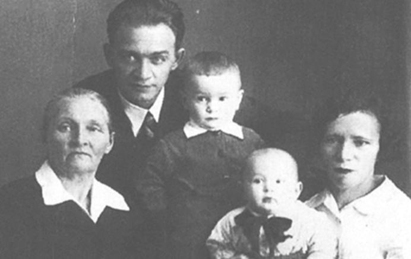
У маленького Эдика было три любимых игрушки: громадный резиновый крокодил по имени Гена, маленькая пластмассовая кукла Галя и неуклюжий плюшевый зверёк: уши – большие, хвост пуговкой, не поймешь, не то заяц, не то собака. Словом, невиданный зверёк, который много лет спустя обретёт имя и станет знаменитым Чебурашкой.
С началом войны детей с матерью эвакуировали в зауральский Шадринск, где они прожили четыре года. Наталья Алексеевна работала в детском саду.
Николай Михайлович остался оборонять Москву, он был награжден орденом Красной звезды. В конце войны Николай Успенский заболел туберкулезом, а в 1947 году скончался.
В один из дней произошло настоящее чудо – он и его братья получили посылку с фронта – шикарные немецкие игрушки. Эдуард Николаевич на всю жизнь запомнил замечательный светофор, на котором загорались лампочки.
В 1944 году семья вернулась в Москву. Успенский хорошо помнит город с затемненными окнами, на каждом из которых висели черные шторы на случай бомбежки.
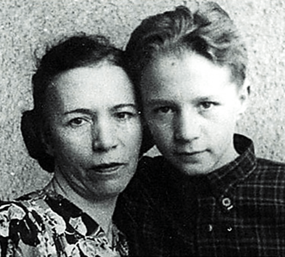
В 1945 году Эдуард пошел в мужскую школу № 56. Эдуард Успенский в школе был не только хулиганом, но и двоечником. С плохими оценками боролся кардинально: научился виртуозно срезать их из дневника лезвием. На любимый же вопрос всех взрослых «Кем ты хочешь стать?» отвечал не задумываясь: «Ну, или министром, или академиком — не меньше».
Однажды, сломав ногу, маленький Эдик долго лежал в больнице, где от скуки начал читать один за другим учебники (особенно ему полюбилась математика). Так сломанная нога помогла двоечнику стать отличником и гордостью школы.
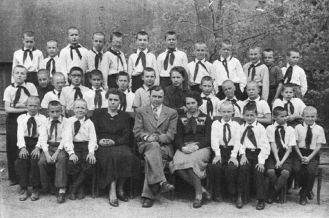
Чтобы как-то унять энергию Эдуарда, его назначают вожатым к 4 классу. Для своих подопечных он впервые написал юмористические стихи.
Успенский вспоминал: «Порой я проводил с ними целый день: мы вместе катались на лыжах и ходили в театр… <…> …Именно эта возня с детьми сделала меня детским писателем».
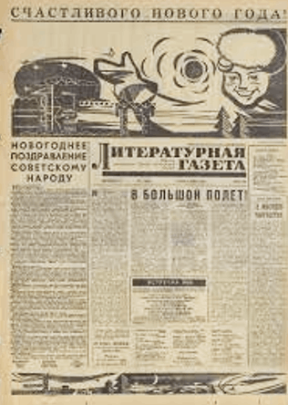
Путь к творчеству Успенского начинается в юмористическом жанре совместно с Аркадием Аркановым. Начали издаваться в «Литературной газете» и звучать по радио детские стихи.
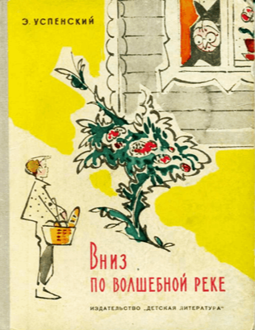
В 1966 Эдуард Успенский стал популярен благодаря своим детским произведениям: «Вниз по волшебной реке», «Крокодил Гена и его друзья». За год до этого он выпустил дебютный поэтический сборник «Смешной слонёнок».
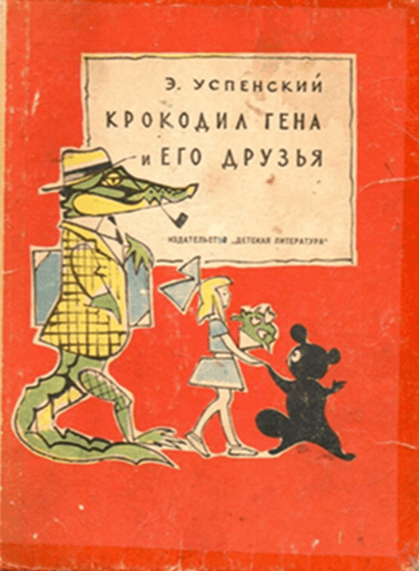
«Крокодил Гена и его друзья» - сказка о том, как одинокий крокодил Гена, работающий в зоопарке, и экзотический зверёк Чебурашка обрели товарищей, открыв Дом дружбы для всех отвергнутых и одиноких.
Эдуард Николаевич работал в пионерском лагере, читал детям интересные книжки. Когда интересные книжки закончились, Успенский начал рассказывать свою сказку… «В одном городе жил крокодил по имени Гена, а работал он в зоопарке крокодилом». Так появилась книга «Крокодил Гена и его друзья», в последующие годы в свет вышли еще семь литературных произведений. В нем рассказывается о необычном зверьке из коробки с апельсинами.
Откуда же взялось его имя? Вот как об этом рассказывает сам автор: «Изначально Чебурашка появился в виде маленькой девочки, которой было четыре года. Ей купили цигейковую шубу, а было лето и было жарко. Шуба тогда была целым событием, поэтому купили летом. Шуба была на вырост, девочка делала шаг — и падала. И тогда ее дядя, мой друг, писатель Феликс Камов сказал: «Вот Чебурашка, чебурахнулась!».
И вот это маленькое беспомощное существо с огромным воротником и было первым родничком, из которого в конце концов появился Чебурашка».
Сказку под названием «Крокодил Гена и его друзья», писательская среда встретила без особого энтузиазма.
Спас сказочку Эдуарда Успенского художник Валерий Сергеевич Алфеевский – классик советской детской книжной иллюстрации.
Алфеевский заинтересовался Геной и его друзьями и пообещал «исправить» книгу рисунками.
В итоге книгу допустили к печати именно благодаря иллюстрациям Алфеевского и его авторитету.
У Алфеевского Чебурашка более вытянутый, с меньшими ушами; Гена — без шляпы, без курительной трубки.
Эдуард Николаевич Успенский – советский и российский писатель, драматург, сценарист, автор книг о Чебурашке.
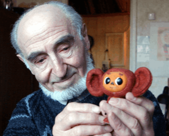
Леонид Аронович Шварцман – художник, режиссер мультипликационного кино, народный художник РФ.
Именно он подарил нам классический визуальный образ Чебурашки, крокодила Гены и старухи Шапокляк.
Роман Абелевич Качанов — режиссер анимационного кино, подаривший нам такие шедевры, как «Варежка», «Чебурашка», «Тайна третьей планеты» «Крокодил Гена».
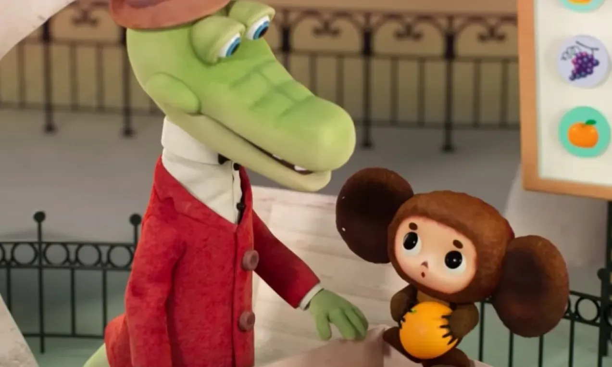
Режиссера Качанова, по его собственным словам, героическая история заморского чуда не впечатлила, он всего лишь хотел сделать мультфильм про животных и людей, которые уживаются вместе в одном городе. Одним словом, про ситуацию, когда твоим соседом может оказаться крокодил — говорящий интеллигент, работающий в зоопарке в должности «крокодил». Но в дело вмешалась судьба в лице художника Леонида Шварцмана. Именно он превратил неказистого (да что уж там, довольно уродливого), судя по изначальному описанию, зверька в кумира миллионов с большими глазами, большими ушами и огромным сердцем. И тут же стало понятно, что вот он — главный герой. Как подтверждение этому — второй мультфильм Качанова, вышедший в 1971 году, назывался уже «Чебурашка».
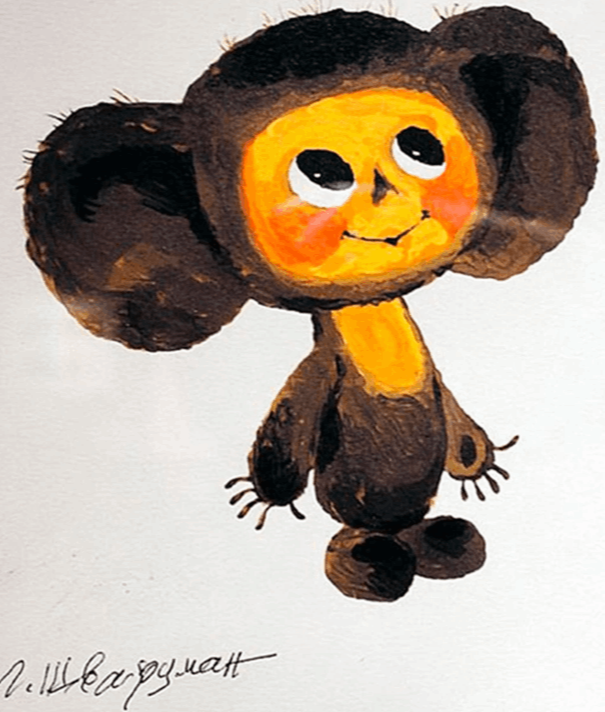
Чебурашка за эти годы, сильно изменился: на иллюстрациях к первому изданию книги работы Валерия Алфеевского у него длинный хвост и маленькие ушки на макушке.
Художника-мультипликатора Леонида Шварцмана называют «отцом Чебурашки» - создавший незабываемый визуальный образ с детскими удивленными глазами, кроткой улыбкой и смешными круглыми ушами.
Успех Чебурашки, задуманного как «приложение к крокодилу», стал сюрпризом даже для самого писателя. Но, видимо, эта маргинальность, незащищенность персонажа сделала его таким притягательным для нескольких поколений детей не только в России, но и за рубежом.
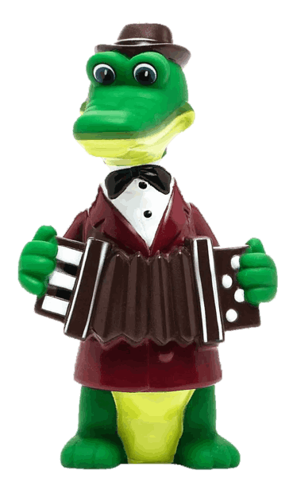
Гена — очень добрый крокодил. Днем он служит в зоопарке, а вечерами играет в шахматы сам с собой — потому что у него совсем нет друзей. Однажды Гена дает объявление о том, что ищет друзей. На него откликается девочка Галя, а еще очень странное существо с большими ушами по имени Чебурашка. Он-то и станет для Гены самым лучшим другом!
Табличка на его рабочем месте гласит: «Африканский крокодил Гена. Возраст пятьдесят лет. Кормить и гладить разрешается».
Носит красное пальто, белую рубашку, чёрный галстук-бабочку, на голове шляпу, в зубах у него часто торчит курительная трубка.
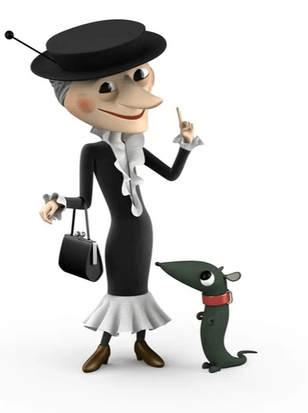
Старуха Шапокляк - главный антагонист крокодила Гены, названа в честь мужского головного убора, популярного у модников середины XIX века. Эта разновидность цилиндров отличалась практическим удобством: шляпы легко складывались с характерным звуком «кляк».
В одном из интервью Эдуард Успенский рассказал, что Шапокляк — собирательный образ: это немного и его первая жена Римма, немного и он сам. Свой вклад в облик героини внес, конечно, и художник Леонид Шварцман, отчасти срисовав Шапокляк со своей тещи.
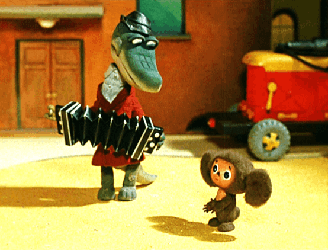
Во втором мультфильме, вышедшем в 1971 году звучит знаменитый детский хит всех времен и народов: «Песенка крокодила Гены» на музыку композитора Владимира Шаинского и слова Александра Тимофеевского.
В 1974 году выходит третий мультфильм «Шапокляк», в котором роль знаменитой зловредной старухи озвучила актриса Ирина Мазинг. Эта серия подарила детям великолепную песню на стихи Эдуарда Успенского и музыку Владимира Шаинского «Голубой Вагон».
У автора сказки и возникла замечательная идея создать радиоспекталь, а потому композитор Шаинский и автор сказки Успенский вновь объединившись в творческий тандем, создали ряд песен. Примером тому может служить очаровательная «Песенка Чебурашки».
Пластинка с аудиосказкой впервые была выпущена в 1975 году и сразу же приобрела огромную популярность.
Влади́мир Я́ковлевич Шаи́нский — советский и российский композитор, пианист, певец, скрипач, музыкальный педагог; народный артист РСФСР, лауреат Государственной премии СССР и премии Ленинского комсомола. Известен как автор множества популярных песен и песен для детей, в том числе музыки для мультфильмов про Чебурашку и Крокодила Гену.
Александр Павлович Тимофеевский — русский писатель, поэт и сценарист, редактор. Широкую известность Тимофеевскому в 1971 году принесла «Песенка Крокодила Гены» из мультфильма «Чебурашка» на музыку композитора В. Я. Шаинского. Лауреат литературной премии Союза писателей Москвы «Венец».
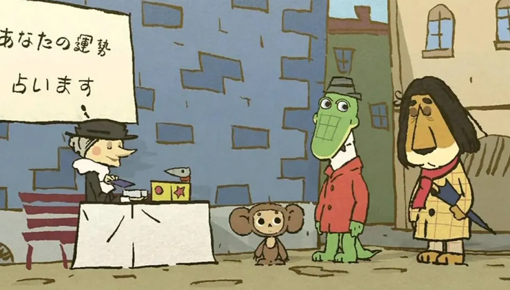
В 2003 году на Токийской международной ярмарке анимации японская фирма SP International приобрела у «Союзмультфильма» права на распространение в Японии мультфильмов о Чебурашке до 2023 года.
В 2009-м году начался показ рисованного аниме-сериала под названием «Это что за Чебурашка?», а в 2010-м вышла первая часть кукольного сериала Макото Накамуры, который работал совместно с «Союзмультфильмом». Чебурашка в Японии — это редкий случай, когда герой получил статус национального символа. Японская культура сама перенасыщена образами, однако она до сих пор неутомимо создает новых персонажей и распространяет их по всему миру.
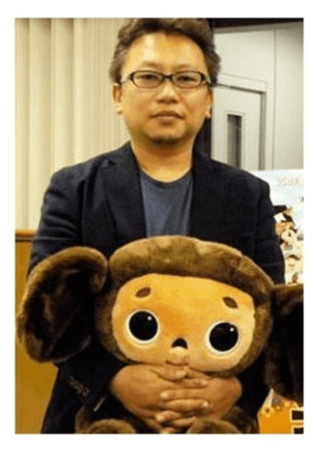
Мультсериал был номинирован на премию международного фестиваля анимационных фильмов в Анси в категории телесериалов в 2010 году.
- Крокодил Гена и Чебурашка (Хабаровские городские пруды)
- Скульптура Чебурашки в одноимённом парке Холона В Крыму установлено два памятника — крокодилу Гене и Чебурашке.
- В городе Ишимбае установлена скульптурная композиция «Крокодил Гена и Чебурашка».
- Памятник, изображающий Чебурашку, крокодила Гену, старуху Шапокляк и крысу Лариску, установлен в 2005 году в подмосковном городе Раменское (скульптор Олег Ершов).
- Памятник Чебурашке планировалось установить в 2007 году в Нижнем Новгороде.
- 29 мая 2008 года на территории детского сада № 2550 в Восточном административном округе Москвы был открыт музей Чебурашки.
- Памятник крокодилу Гене и Чебурашке наряду со скульптурами других героев советских мультфильмов установлен в Хабаровске возле городских прудов, неподалёку от «Платинум-Арены».
- Памятник Чебурашке и крокодилу Гене установлен в Кременчуге.
- Скульптуры Чебурашки и крокодила Гены установлены в Днепре в парке имени Лазаря Глобы.
- В 2018 году в городе Холоне был разбит сад-рассказ «Чебурашка и его друзья».
- 21 августа 2020 года медный памятник Чебурашке был установлен в Чебоксарах в парке культуры и отдыха им. космонавта А. Г. Николаева.
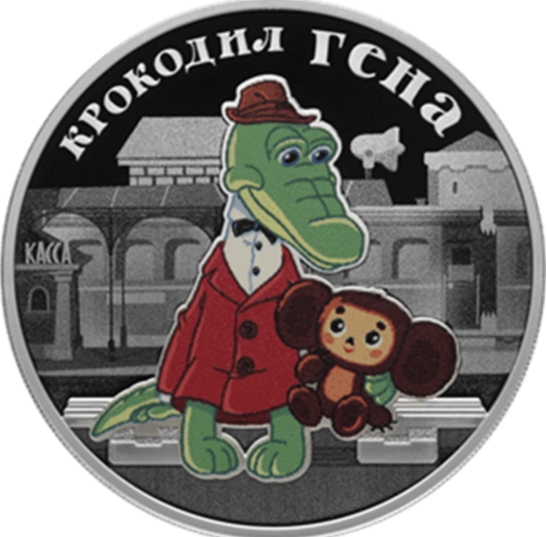
24 ноября 2020 года Банк России выпустил в обращение памятные монеты «Крокодил Гена» серии «Российская (советская). мультипликация» серебряную номиналом 3 рубля и из недрагоценных металлов номиналом 25 рублей.
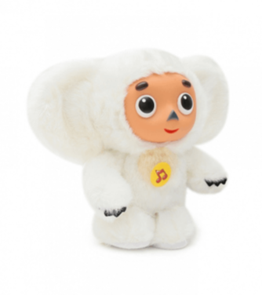
В 1980-х Чебурашка был талисманом советской команды на Олимпийских играх 1980 года в Москве.
На зимних Олимпийских играх в Турине Чебурашка переоделся в белый мех, на Олимпиаду в Пекин, кукла стала красной, потому что в Китае красный — цвет удачи, на зимних Олимпийских играх 2010 г. - стал обладателем синего меха.
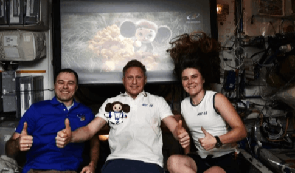
В 2016 году в честь 80-летия студии «Союзмультфильм» плюшевого Чебурашку отправили на МКС вместе с космонавтами Сергеем Прокопьевым, Дмитрием Петелиным и Анной Кикиной. Там игрушке предстояло посмотреть мультики вместе с космонавтами, выйти в открытый космос и запустить вымпел киностудии.
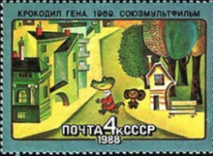
Мультфильму была посвящена почтовая марка, выпущенная в 1988 году Почтой СССР в серии «Из истории советской мультипликации», также почтовые открытки.
Free AI Website Software